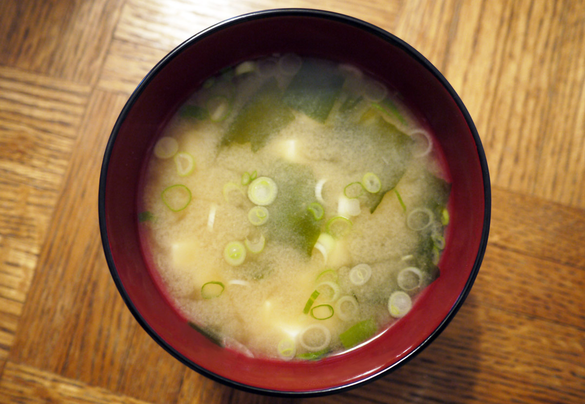

Miso Soup

About the recipe
Miso soup is probably the most well known Japanese dish outside of Japan, second only to sushi
it is found very often as a side dish accompanying a myriad of Japanese meals, from grilled fish and tamago yaki, to gyu-don and deep fried shrimp, and can be seen served in traditional lacquer bowls accompanying every meal from breakfast to dinner.
Ingredients
- 3 cups dashi stock (3 cups water mixed with 1 1/2 tsp dashi granules)
- 2-3 tbsp miso paste
- 3 oz (1/4 of a block) of soft tofu, cut into 1/2 inch (or smaller) cubes
- 2 tsp wakame (dried seaweed)
- 1 green onion, finely chopped
Directions
- Bring dashi stock to a low simmer in a medium pot.
- Mix miso paste into the dashi stock using a mesh strainer or a ladle to ensure the miso is fully dissolved, and tasting the soup between each tablespoon added.
- Add tofu, wakame, and green onion to the pot. Heat, but do not boil.
- Serve with your Japanese meal.
Back to Home Page